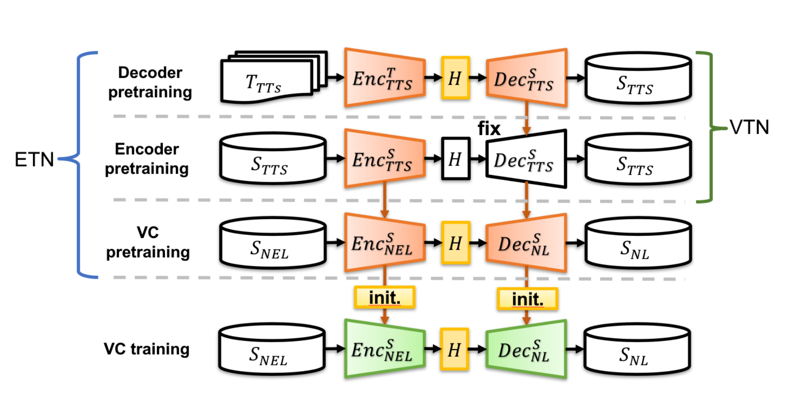
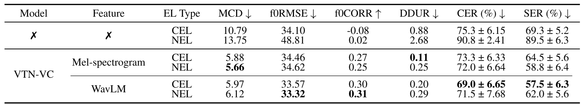
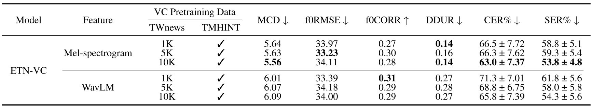
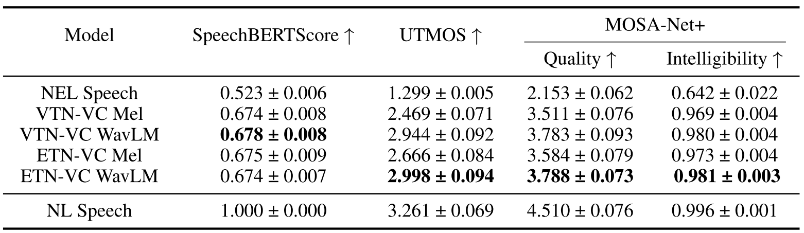
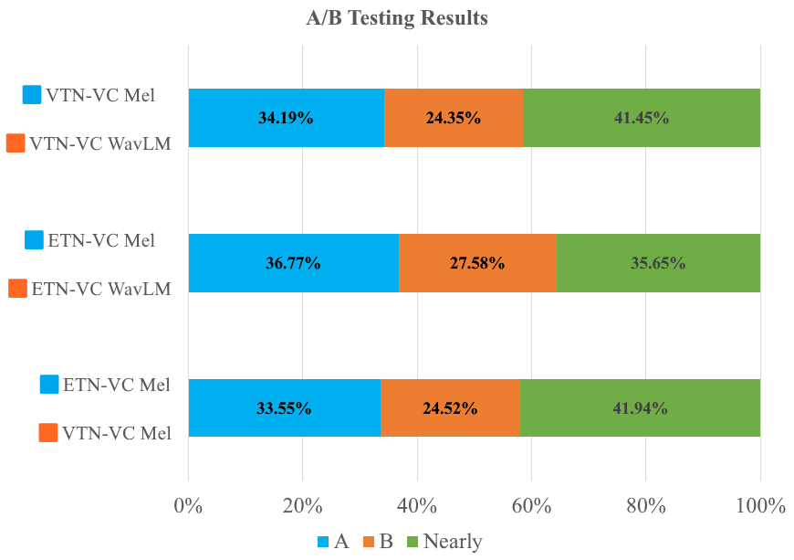
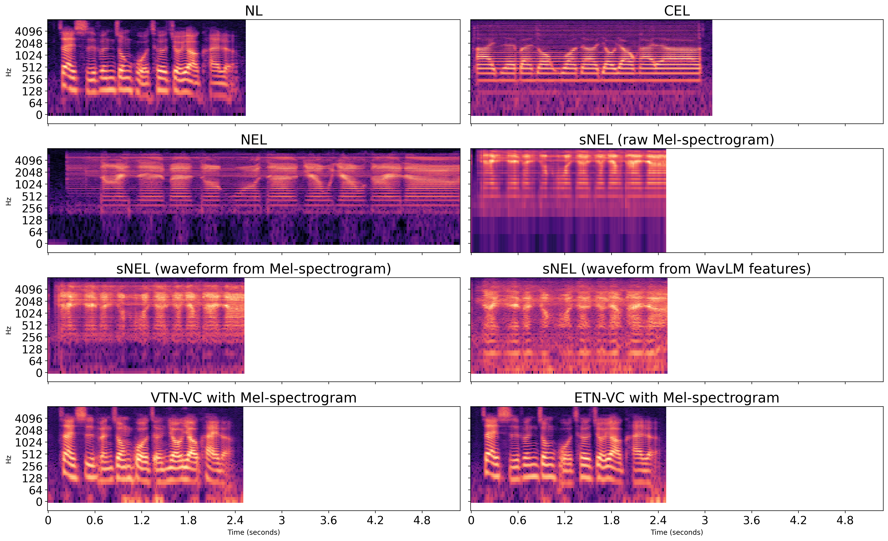

Electrolaryngeal (EL) speech often exhibits reduced intelligibility and naturalness due to imperfect excitation and fixed pitch. In this preclinical study, we present the first systematic investigation of electrolaryngeal voice conversion (ELVC) for speech produced by a newly invented nasal electrolarynx (NEL), extending prior work that mainly targets cervical EL (CEL) speech. We examine feature choice under NEL's distinctive acoustics by comparing Mel-spectrograms and the 6th-layer WavLM representation as inputs to a seq2seq ELVC system. To address NEL data scarcity, we propose an LLE-VC–based augmentation strategy to synthesize paired sNEL–sNL speech for VC pretraining. Experiments reveal device-dependent trends: the chosen WavLM representation benefits CEL-oriented conversion and augmentation, whereas Mel-spectrogram inputs better preserve NEL-specific spectral characteristics and yield better intelligibility-related metrics and listener preferences for NEL-to-NL conversion.

Fig. 1. Overview of CEL and NEL speech production. The left panel shows speaking with a traditional cervical EL (CEL) device, the right panel shows speaking with a new nasal EL (NEL) device, and the middle two panels show the differences between speaking using the two assistive devices.
Subjective: A/B intelligibility test — listeners select the more intelligible sample or "no preference."
| System | CER (%) ↓ | SER (%) ↓ |
|---|---|---|
| Unprocessed NEL speech | 90.8 | 89.5 |
| SeedVC | 71.8 | 84.8 |
| MKL-VC | 85.0 | 99.5 |
| Vevo | 84.0 | 101.5 |
Among zero-shot VC baselines, SeedVC achieved the lowest CER and SER. However, all zero-shot VC systems still showed high error rates, suggesting that generic zero-shot VC models remain insufficient for NEL speech conversion.

Table I. Performance comparison of VTN-VC models on CEL-to-NL and NEL-to-NL tasks using Mel-spectrograms and WavLM features, with metrics of unprocessed raw CEL/NEL speech included for reference.

Table II. ETN-VC trained on the TMHINT training set with 1k/5k/10k TWNews utterances.

Table III. SpeechBERTScore, UTMOS, and MOSA-Net+ scores for NEL, NL, and converted speech (mean ± 95% confidence interval).

Fig. 2. A/B test results for different model configurations on intelligibility. The bars represent the percentage of subjects' voting for each system (system A, system B, and no preference).
CEL conversion uses WavLM features; NEL conversion uses Mel-spectrograms.

Fig. 3. Mel-spectrograms of NL, CEL, and NEL speech, sNEL speech synthesized using Mel-spectrogram and WavLM features, and converted speech of VTN-VC and ETN-VC (both with Mel-spectrogram). NEL speech is typically longer, whereas synthesized and converted speech follow NL durations due to seq2seq alignment.